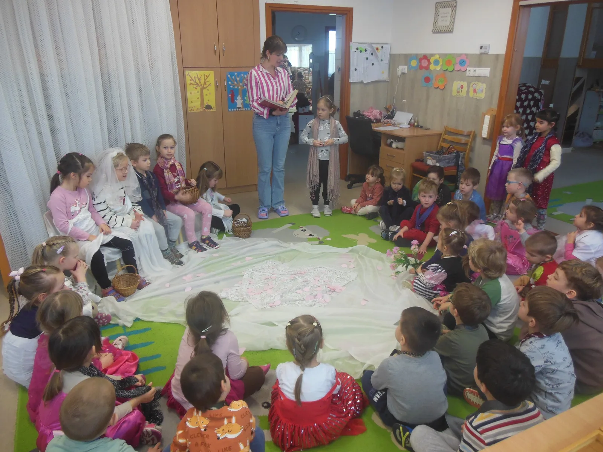

Küldetésnyilatkozatunk
Keresztyén szellemű nevelésünk célja, hogy a gyermekek – mint fejlődő személyiségek – szeretetteljes, Istenben való hitben, élménygazdag környezetben, az egyéni fejlődési ütemük tiszteletben tartásával, koruknak megfelelően, iskolás életmódra érett, harmonikusan kibontakozó, problémamegoldó, Istenben való hitben élő személyiséggé váljanak.
A szülőkkel való együttneveléssel a gyermekek találjanak rá az útra, az evangéliumi hitre, mely az Úr Jézuson keresztül Istenhez vezet.
Céljaink
Értékeket közvetítő óvoda
A keresztyén erkölcsi értékeket tartjuk fontosnak (a Biblia tanítását fogadjuk el hitünk, értékeink és nevelési elveink alapjául), melyeket a mindennapi életben igyekszünk életre kelteni:
- szeretet
- megbocsátás
- megbánás-jóvátétel
- engedelmesség
- segítőkészség-együttérzés
- öröm-hála
Gyermekeink hitre nevelése gondos tanítást, mindenre kiható nevelést igényel. Isten Igéjét az óvodai élet láncolatába, mozzanataiba inkább csendesen szeretnénk beleszőni.
„Engedjétek hozzám jönni a kisgyermekeket, és ne tiltsátok el őket, mert ilyeneké az Isten országa.”
Márk 10,14
Az óvodánk csak akkor érhet el tartós nevelési eredményeket, ha a szülők elfogadják, és tudatosan támogatják törekvéseinket. A gyermek fejlesztése, fejlődése csak úgy biztosítható, ha mi, óvónők következetesen támaszkodunk a szülőkre. Az óvodai évek alatt együttműködve, a szülőket bevonva próbáljuk a gyermekeket fejleszteni úgy, hogy a szülőket is segítjük, megerősítjük szerepükben.
A társadalmi közeg jellemzése
Napjainkban a társadalomban a keresztyénséggel ellentétes, elvilágiasodott szemlélet vált uralkodóvá. Körülvesz bennünket egy olyan világlátás, amely megkérdőjelezi a keresztyén értékrendet. A tömegtájékoztató eszközök egy Isten nélküli világot mutatnak be, amely azt az életszínvonalat bálványozza, melynek során a legfőbb cél a siker, a pénz, a kényelem és a gazdagság.
Az óvodáskor jelentősége a hitben és hitre nevelésben
Gyermekünk felnőtt személyiségének nyolcvanöt százaléka kialakul a hatodik születésnapja körüli ideig. Tehát az első néhány kritikus év alatt van legnagyobb esély a sikeres nevelésre. Életük első éveiben van lehetőségünk arra, hogy átadjuk nekik azokat az értékeket, amelyeket mi magunk fontosnak tartunk.
„Tanítsátok meg ezeket a fiaitoknak is, beszélj róluk, ha otthon vagy, és ha úton jársz, ha lefekszel, és ha felkelsz.”
5Móz 11,19

Óvodánk története
Kecskeméten a város egyharmada él a Széchenyivárosban – több mint harmincezren –, aminek a szélén áll a 2004-ben épült baptista imaházunk.
A gyülekezet vezetőségének Istentől kapott látásaként 2007 szeptemberében indultunk az imaház épületében játszóházzal, majd 2008. február 15-től – a Magyarországi Baptista Egyház fenntartásában – egycsoportos óvodával folytattuk. 2011-ben épült meg – az imaházhoz közvetlenül hozzáépítve – a kétcsoportos óvoda, így szeptembertől egy nagy és egy kisbárányka csoportban tudjuk fogadni az óvodáskorú gyermekeket.
- 2004felépül a baptista imaház
- 2007indul a játszóház
- 2008egycsoportos óvoda
- 2011kétcsoportos óvoda